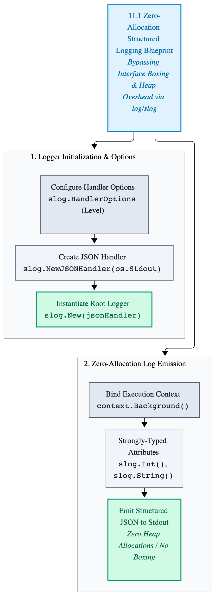
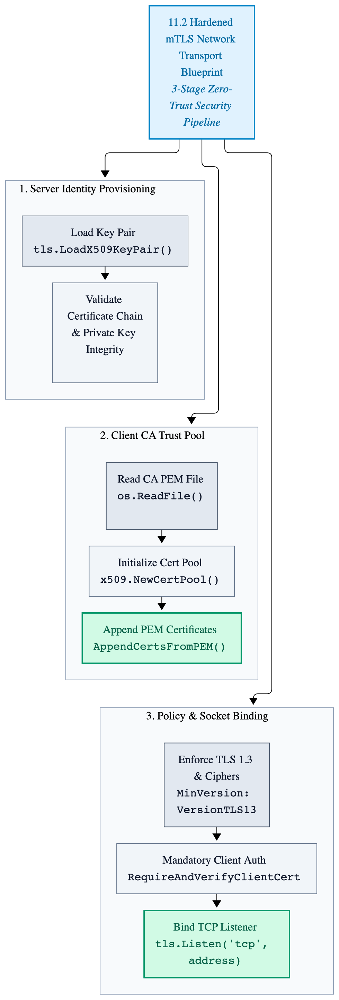
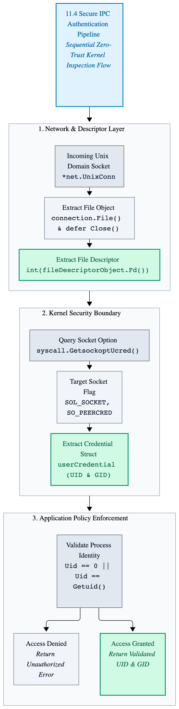

Observability & Security
Welcome to Chapter 11 of the Go Systems Blueprint. Building upon the testing and verification patterns examined in Chapter 10, production daemons require rigorous observability and cryptographic network boundaries under high throughput.
This chapter covers zero-allocation structured logging via log/slog, hardened mutual TLS (mTLS) network transports,
OpenTelemetry distributed tracing, and secure Unix domain socket credential verification.
11.1 Zero-Allocation Structured Logging (log/slog)
Legacy logging formats incur heavy interface boxing and heap allocations. Go's standard library log/slog
provides high-performance structured logging designed to minimize allocations on hot execution paths.
Figure 11.1: Zero-Allocation Structured Logging Architecture

package main
import (
"context"
"errors"
"log/slog"
"os"
)
// InitializeStructuredLogger configures and returns a production-grade JSON logger
// optimized for minimal runtime overhead and zero-allocation key-value formatting.
func InitializeStructuredLogger() (*slog.Logger, error) {
// Configure JSON handler options for production output.
handlerOptions := &slog.HandlerOptions{
Level: slog.LevelInfo,
ReplaceAttribute: func(groups []string, attributeKey string, attributeValue slog.Attr) slog.Attr {
// Standardize time formatting keys or drop unwanted fields if necessary.
return attributeValue
},
}
// Create a JSON output handler targeting standard output.
jsonHandler := slog.NewJSONHandler(os.Stdout, handlerOptions)
if jsonHandler == nil {
return nil, errors.New("error: failed to initialize slog JSON handler")
}
// Construct and return the root logger instance.
systemLogger := slog.New(jsonHandler)
return systemLogger, nil
}
// LogServerStartup records server startup metrics using structured attributes without interface allocation overhead.
func LogServerStartup(loggerInstance *slog.Logger, serverPort int, processId int) error {
// Defensively guard against a nil logger instance.
if loggerInstance == nil {
return errors.New("error: logger instance cannot be nil")
}
// Defensively validate server port bounds.
if serverPort <= 0 || serverPort > 65535 {
return errors.New("error: server port is invalid")
}
loggerInstance.InfoContext(
context.Background(),
"initializing distributed systems daemon",
slog.Int("port", serverPort),
slog.Int("pid", processId),
slog.String("status", "ready"),
)
return nil
}11.2 Hardened Mutual TLS (mTLS) Network Transport
Zero-trust system architecture requires mutually authenticated TLS connections between internal daemons and clients, enforcing TLS 1.3 parameters, strict cipher suites, and mandatory client certificate validation.
Figure 11.2: Hardened Mutual TLS (mTLS) Network Architecture

package main
import (
"crypto/tls"
"crypto/x509"
"errors"
"fmt"
"net"
"os"
)
// CreateSecureListener initializes a hardened TLS listener enforcing strict cipher suites
// and mutual client certificate authentication.
func CreateSecureListener(
listenAddress string,
certificatePath string,
privateKeyPath string,
caCertificatePath string,
) (net.Listener, error) {
// Defensively validate path parameters.
if listenAddress == "" {
return nil, errors.New("error: listen address cannot be empty")
}
if certificatePath == "" || privateKeyPath == "" || caCertificatePath == "" {
return nil, errors.New("error: certificate, private key, and CA paths must be provided")
}
// Load server certificate and private key pair.
serverCertificates, loadKeyPairError := tls.LoadX509KeyPair(certificatePath, privateKeyPath)
if loadKeyPairError != nil {
return nil, fmt.Errorf("failed to load X.509 key pair: %w", loadKeyPairError)
}
// Load certificate authority (CA) pool for client verification.
certificateBytes, readCaError := os.ReadFile(caCertificatePath)
if readCaError != nil {
return nil, fmt.Errorf("failed to read client CA certificate file: %w", readCaError)
}
clientCertPool := x509.NewCertPool()
if !clientCertPool.AppendCertsFromPEM(certificateBytes) {
return nil, errors.New("error: failed to append client CA certificate PEM block")
}
// Construct hardened TLS configuration enforcing TLS 1.3 and mutual authentication.
tlsConfiguration := &tls.Config{
Certificates: []tls.Certificate{serverCertificates},
ClientAuth: tls.RequireAndVerifyClientCert,
ClientCAs: clientCertPool,
MinVersion: tls.VersionTLS13,
CipherSuites: []uint16{
tls.TLS_AES_256_GCM_SHA384,
tls.TLS_CHACHA20_POLY1305_SHA256,
},
}
// Bind the secure network listener.
secureListener, listenError := tls.Listen("tcp", listenAddress, tlsConfiguration)
if listenError != nil {
return nil, fmt.Errorf("failed to bind secure TLS listener on %s: %w", listenAddress, listenError)
}
return secureListener, nil
}11.3 OpenTelemetry Distributed Tracing Integration
OpenTelemetry enables engineers to instrument execution paths and pass trace contexts across network boundaries without triggering unnecessary heap allocations on hot paths.
Figure 11.3: Advanced Instrumented Telemetry Wrappers Architecture

package main
import (
"context"
"errors"
"go.opentelemetry.io/otel"
"go.opentelemetry.io/otel/attribute"
"go.opentelemetry.io/otel/trace"
)
// TraceSystemOperation executes a critical systems operation wrapped in an OpenTelemetry span
// for distributed latency tracking and telemetry propagation.
func TraceSystemOperation(
tracingContext context.Context,
tracerName string,
operationName string,
recordIdentifier uint64,
) error {
// Defensively validate that the parent tracing context is not nil.
if tracingContext == nil {
return errors.New("error: tracing context cannot be nil")
}
if tracerName == "" {
return errors.New("error: tracer name cannot be empty")
}
if operationName == "" {
return errors.New("error: operation name cannot be empty")
}
tracer := otel.Tracer(tracerName)
childContext, span := tracer.Start(
tracingContext,
operationName,
trace.WithAttributes(
attribute.Int64("record.identifier", int64(recordIdentifier)),
),
)
defer span.End()
// Simulate performant internal processing using the child execution context.
_ = childContext
return nil
}11.4 Secure Inter-Process Communication (IPC) Authentication
For high-throughput local daemons communicating via Unix domain sockets, local IPC channels verify the OS-level process credentials (UID and GID) of connecting clients before permitting data exchange.
Figure 11.4: Unix Domain Socket Peer-Credential IPC Authentication Flowchart

package main
import (
"errors"
"fmt"
"net"
"os"
"syscall"
)
// VerifyUnixSocketPeerCredentials inspects an incoming Unix domain socket connection
// and extracts process credentials to enforce strict local IPC access control.
func VerifyUnixSocketPeerCredentials(unixConnection *net.UnixConn) (int, int, error) {
// Defensively validate that the incoming Unix connection is not nil.
if unixConnection == nil {
return 0, 0, errors.New("error: unix connection cannot be nil")
}
fileDescriptorObject, fileError := unixConnection.File()
if fileError != nil {
return 0, 0, fmt.Errorf("failed to extract file handle from unix connection: %w", fileError)
}
defer fileDescriptorObject.Close()
fileDescriptor := int(fileDescriptorObject.Fd())
userCredential, getsockoptError := syscall.GetsockoptUcred(fileDescriptor, syscall.SOL_SOCKET, syscall.SO_PEERCRED)
if getsockoptError != nil {
return 0, 0, fmt.Errorf("failed to query SO_PEERCRED socket option: %w", getsockoptError)
}
if userCredential == nil {
return 0, 0, errors.New("error: kernel returned nil peer credential structure")
}
// Verify that the calling process matches expected administrative UID or local limits.
callerUID := int(userCredential.Uid)
callerGID := int(userCredential.Gid)
if callerUID != 0 && callerUID != os.Getuid() {
return callerUID, callerGID, fmt.Errorf(
"unauthorized process credentials (uid=%d, gid=%d): access denied",
callerUID,
callerGID,
)
}
return callerUID, callerGID, nil
}Key Takeaways
-
Zero-Allocation Logging (
log/slog): Structure output and format key-value pairs without incurring interface boxing or heap allocation spikes on high-throughput paths. - Hardened mTLS Transport: Enforce TLS 1.3, strict cipher suite restrictions, and mandatory client certificate validation to secure zero-trust network boundaries.
- Distributed Tracing (OpenTelemetry): Propagate trace contexts and measure execution latencies across network calls with minimal runtime overhead.
-
Secure Local IPC: Extract and validate OS-level peer credentials (
SO_PEERCRED) on Unix domain sockets to enforce strict process-level access control.